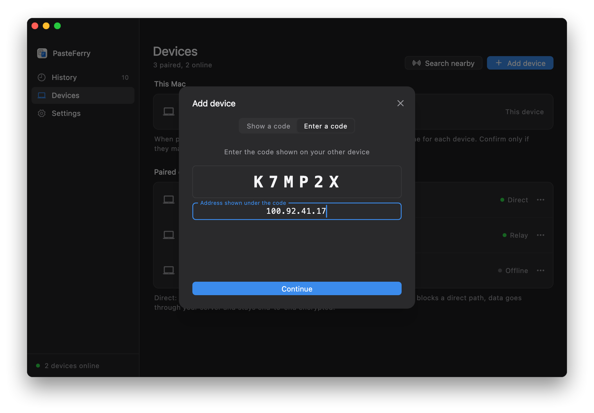

Across networks with Tailscale
No public IP, and no wish to run a server? Install Tailscale on each computer and enter the other computer's Tailscale address when pairing. Syncs at home and at the office.
As if on one LAN
Tailscale connects your devices into a private network: every device signed in to the same account gets a fixed address starting with 100, reachable from the others wherever they are. PasteFerry remembers the other computer's address when you pair, and connects as if both were on one network.
- No server, and no computer that has to stay on: two computers that are on and connected to Tailscale sync.
- Enter the address once. A Tailscale address doesn't change; you enter it when pairing and the two computers find each other from then on.
- Encrypted twice. Inside Tailscale's WireGuard tunnel runs PasteFerry's own end-to-end encrypted connection. Tailscale can't see the content.
Before you start
- A Tailscale account
- Free for personal use; sign in with Google, Microsoft, GitHub or Apple. Use the same account on every device.
- Tailscale on every computer
- There are clients for Windows, macOS and Linux. Every computer that runs PasteFerry needs it, connected.
- PasteFerry installed
- The app on each computer with background sync on; see the quick start. Leave the server address empty.
- ZeroTier works too
- So does any tool that gives each device a fixed virtual address: enter that address when pairing. This guide uses Tailscale.
Step 1
Install Tailscale on each computer
On every computer you sync, install it and sign in to the same account.
- Download the client for your system from the Tailscale website and install it.On Linux, run
curl -fsSL https://tailscale.com/install.sh | sh, thensudo tailscale up, and open the link it prints to sign in. - Open Tailscale and sign in, using the same account on every computer.
- The Tailscale admin console then lists all your devices, each with an address starting with 100.
| Machine | Tailscale address | OS |
|---|---|---|
| macbook-pro | 100.88.20.5 | macOS |
| home-pc | 100.92.41.17 | Windows |
Keep Tailscale connected
- Windows: right-click the Tailscale icon in the notification area and check Run unattended under Preferences, so it stays connected after you sign out.
- Mac: make sure Tailscale opens at login.
- Disable key expiry: by default Tailscale asks devices to sign in again every 180 days. For a computer that rarely changes, open the menu at the end of its row on the Machines page and choose Disable key expiry.
Step 2
Find the other computer's Tailscale address
On the computer you'll pair with, click the Tailscale icon (in the menu bar on a Mac, in the notification area on Windows) to see its address, or run tailscale ip -4 in a terminal.
> tailscale ip -4 100.92.41.17
The steps below use 100.92.41.17, the Windows PC at home. Use your own address.
Step 3
Enter the address when pairing
Just like pairing on one network, with one extra address.
- On the Windows PC at home, open Devices, click Add device and note the 6-character code.
- On the Mac at the office, click Add device, switch to Enter a code and type it in; then click On a different subnet?, enter
100.92.41.17and click Continue. - Both screens show the same two fingerprint lines. Check them, then confirm. The two computers now sync wherever they are.

When both computers are at home, PasteFerry also finds the other one on the LAN directly, so data takes no detour.
Questions
Devices show Direct, but it's slow
Direct in PasteFerry means the two computers connect directly on the Tailscale network. When Tailscale can't connect them peer to peer, it relays through its DERP servers, which can be far away.
Run tailscale ping other-address in a terminal: via DERP means Tailscale is relaying; via an IP and port means it's peer to peer. Office and campus networks relay more often; you can run your own DERP server or try another mesh VPN.
Pairing can't find the other computer
First make sure Tailscale is connected on both: run tailscale ping other-address and try again once it answers.
If ping works but pairing doesn't, the other computer's firewall is likely blocking it. On Windows, click Allow under Settings → Local network in PasteFerry; on a Mac, turn on PasteFerry Daemon under System Settings → Privacy & Security → Local Network.
Does every computer need Tailscale?
Yes, a computer without it can't reach the 100.x addresses. Computers on the same network don't need it; see the same network guide.
I set up a server at home with the old guide. Do I still need it?
No. Clear the server address in Settings on each computer and uninstall the server at home; paired devices stay paired. Keeping it doesn't hurt either: a server and Tailscale work together.
Can Tailscale see what I copy?
No. Tailscale connections are end-to-end encrypted with WireGuard, and inside runs PasteFerry's own DTLS-encrypted connection; only your two computers can open either layer. Tailscale's servers only exchange device keys and addresses, and its relays forward encrypted packets.
Will a Tailscale address change?
Usually not. The address belongs to the device and survives restarts and network changes; it only changes if you remove the device from Tailscale and add it again. If it does, enter it once more under Devices.
I have a public server. Do I need Tailscale?
No. Run the server on the machine with the public IP and enter that address on every computer; see the public server guide.
No server.
Your clipboard comes with you.
Version 2.2.0, free and open source. macOS 13 or later; Windows 10 and 11; Linux (x64 and ARM64).
Back to the same network guide